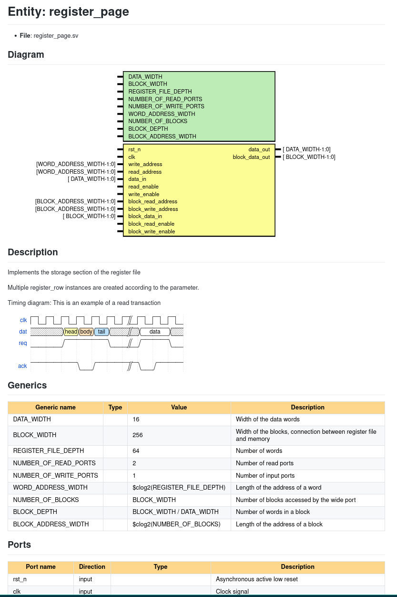

Style guide for Verilog and SystemVerilog RTL
The coding guides are splited into three parts:
- Naming conventions
- Coding style
- Inline documentation
Naming conventions
Capitalization
All names must be written in lower case. This includes acronyms and abbreviations such as sram, dpu, drra, etc. The only exception are constants and parameters, which must be written in upper case. The following example shows how to use capitalization:
// Bad
module My_Module (
input Clk,
input Rst,
input [width-1:0] DataInput,
output [width-1:0] RESULT
);
// Good
module my_module (
input clk,
input rst,
input [WIDTH-1:0] data,
output [WIDTH-1:0] result
);
Naming
Signals, modules, parameters and all design elements should be named with descriptive names. Try to avoid abbreviations unless for extremely common names, such as clk, rst_n, ack, etc. Remember that abreviations are not always clear. For example, addr could mean address or adder. The over-use of abbreviations can make the code difficult to read and understand, especially for people that are not familiar with the code. The following example shows how to use descriptive names:
// Bad
logic din;
logic dout;
logic re;
logic we;
logic raddr;
// Good
logic data_in;
logic data_out;
logic read_enable;
logic write_enable;
logic read_address;
Sufixes
Some types of signals/ports have a standard sufix. They should be used whenever possible. The following table shows the standard sufixes:
| Type | Sufix |
|---|---|
| Clock signals | _clk |
| Reset signals | _rst |
| Enable signals | _en |
| Active low signals | _n |
| Register signals | _reg |
| Struct | _st |
Prefixes
Some types of labels have a standard prefix. They should be used whenever possible. The following table shows the standard prefixes:
| Block | Label |
|---|---|
| Instances | u_ |
always_comb blocks |
comb_ |
always_ff blocks |
ff_ |
Coding style
The style is the way to write the code. It is important to follow the same style across all files and projects. This helps people that might be unfamiliar with the code to navigate through it. The style is defined by the following rules:
Indentation
The indentation is done with 4 spaces. No tabs are allowed. Modify your editor settings to use 4 spaces when pressing the tab key.
Vim
Add the following lines to your .vimrc file:
Emacs
Add the following lines to your .emacs file:
(setq-default indent-tabs-mode nil)
(setq-default tab-width 4)
(setq indent-line-function 'insert-tab)
Visual Studio Code
Add the following lines to your settings.json file:
Gedit
Add the following lines to your .profile file:
Other editors
Please refer to the editor documentation to find out how to change the indentation settings.
Line length
The line length should be limited to a reasonable number of characters. The historically recommended maximum line length is 80 characters. Nowadays with big computer screens 80 characters is usually too small. A good compromise is to limit the line length to 120 characters. This is not a hard limit, but it should be used as a guideline. If a line is too long, it should be split into multiple lines. The line should be split at a logical point, for example, after a comma or an operator. The following example shows how to split a line:
// Bad
assign result = (a + b) * (c + d) * (e + f) * (g + h) * (i + j) * (k + l) * (m + n) * (o + p) * (q + r) * (s + t) * (u + v) * (w + x) * (y + z);
// Good
assign result = (a + b) * (c + d) * (e + f) * (g + h) * (i + j) * (k + l) *
(m + n) * (o + p) * (q + r) * (s + t) * (u + v) * (w + x) *
(y + z);
Spaces
Spaces should be used to improve readability. Spaces should be used after commas, semicolons, operators, etc. The following example shows how to use spaces:
Alignment
Alignment should be used to improve readability. The following example shows how to use alignment:
// Bad
assign result = (a + b) * (c + d);
assign result2 = (a + b) * (c + d);
assign result10 = (a + b) * (c + d);
// Good
assign result = (a + b) * (c + d);
assign result2 = (a + b) * (c + d);
assign result10 = (a + b) * (c + d);
For module declarations, each port should be in a new line and aligned. The following example shows how to align module ports:
// Bad
module my_module (input clk, input rst, input [7:0] data, output reg [7:0] result);
// Good
module my_module (
input clk,
input rst,
input [7:0] data,
output reg [7:0] result
);
For module instantiations, each port and parameter should also be in a new line and aligned. The following example shows how to align module ports and parameters:
// Bad
my_module #(WIDTH = 4, DEPTH = 5) my_module_inst (.clk(clk), .rst(rst), .data(data), .result(result));
// Good
my_module #(
.WIDTH(4),
.DEPTH(5)
) my_module_inst (
.clk(clk),
.rst(rst),
.data(data),
.result(result)
);
Automatic styler
It is recomended to use a tool to automatically format the code. This will save you time and will ensure that the code is always formatted in the same way. The following tools are recomended:
- TerosHDL is a VS Code extension that provides styling, linting, documentation generation, etc.
- svlangserver is a language server for SystemVerilog. It provides styling, linting, code completion, etc. It can be used with any editor that supports language servers, such as VS Code, Vim, Emacs, etc.
- verible is a SystemVerilog formatter. It can be used as a standalone tool or called from other tools, such as TerosHDL or svlangserver.
Inline documentation
Inline documentation is used to describe the design. It is important to document the design to make it easier to understand. The following rules should be followed when writing the documentation:
- The documentation should be written in a way that is easy to understand by people that are not familiar with the design.
- The documentation should be written in English.
- Ports, parameters should be documented. I.e. all inputs and outputs of a module should be documented.
- Internal signals that are self-explanatory do not need to be documented.
The inline comments can then be used to automatically generate documentation for the designs. For this project we use TerosHDL documentation generator, which can be used as part of the VS Code extension or in standalone mode using the python package.
To add documentation to a design use //! as the comment character. Comments that start with //! will be parsed by the documentation generator. Comments with // can be used for "local" explanations that should not be reflected in the global documentation.
Comments should be added at the begining of the module, before the ports and parameters. A decription of the module should be priovided before the module starts. Additional information can be included in the module description, such as fsm or timing diagrams with wavedrom, etc. The following example shows how to document a module:
//! Implements the storage section of the register file
//!
//! Multiple register_row instances are created according to the
//! <register_page.REGISTER_FILE_DEPTH> parameter.
//!
//! Timing diagram:
//! This is an example of a read transaction
//! {signal: [
//! {name: 'clk', wave: 'p.....|...'},
//! {name: 'dat', wave: 'x.345x|=.x', data: ['head', 'body', 'tail', 'data']},
//! {name: 'req', wave: '0.1..0|1.0'},
//! {},
//! {name: 'ack', wave: '1..01.|01.'}
//! ]}
module register_page #(
//! Width of the data words
parameter DATA_WIDTH = 16,
//! Width of the blocks, connection between register file and memory
parameter BLOCK_WIDTH = 256,
//! Number of words
parameter REGISTER_FILE_DEPTH = 64,
//! Number of read ports
parameter NUMBER_OF_READ_PORTS = 2,
//! Number of input ports
parameter NUMBER_OF_WRITE_PORTS = 1,
/* Local parameters */
//! Length of the address of a word
parameter WORD_ADDRESS_WIDTH = $clog2(REGISTER_FILE_DEPTH),
//! Number of blocks accessed by the wide port
parameter NUMBER_OF_BLOCKS = (DATA_WIDTH * REGISTER_FILE_DEPTH) / BLOCK_WIDTH,
//! Number of words in a block
parameter BLOCK_DEPTH = BLOCK_WIDTH / DATA_WIDTH,
//! Length of the address of a block
parameter BLOCK_ADDRESS_WIDTH = $clog2(NUMBER_OF_BLOCKS)
) (
//! Asynchronous active low reset
input logic rst_n,
//! Clock signal
input logic clk,
/* Word access signals */
//! Array of write addresses for word access, one for each write port
input logic [WORD_ADDRESS_WIDTH-1:0] write_address[NUMBER_OF_WRITE_PORTS-1:0],
//! Array of read addresses for word access, one for each read port
input logic [WORD_ADDRESS_WIDTH-1:0] read_address [ NUMBER_OF_READ_PORTS-1:0],
//! Data input for word access, one word for each read port
input logic [ DATA_WIDTH-1:0] data_in [NUMBER_OF_WRITE_PORTS-1:0],
//! Data output for word access, one word for each write port
output logic [ DATA_WIDTH-1:0] data_out [ NUMBER_OF_READ_PORTS-1:0],
//! Read enable flag, one bit for each read port
input logic read_enable [ NUMBER_OF_READ_PORTS-1:0],
//! Write enable flab, one bit for each write port
input logic write_enable [NUMBER_OF_WRITE_PORTS-1:0],
/* Block access signals */
//! Read address for block access
input logic [BLOCK_ADDRESS_WIDTH-1:0] block_read_address,
//! Write address for block access
input logic [BLOCK_ADDRESS_WIDTH-1:0] block_write_address,
//! Data input for block access
input logic [ BLOCK_WIDTH-1:0] block_data_in,
//! Data output for block access
output logic [ BLOCK_WIDTH-1:0] block_data_out,
//! Block read enable flag
//! '0' -> Row access mode (depending on read_enable flags)
//! '1' -> Block access mode
input logic block_read_enable,
//! Block write enable flag
//! - <0> -> Row access mode (depending on write_enable flags)
//! - '1' -> Block access mode
input logic block_write_enable
);
endmodule;
This code will generate the following documentation: 